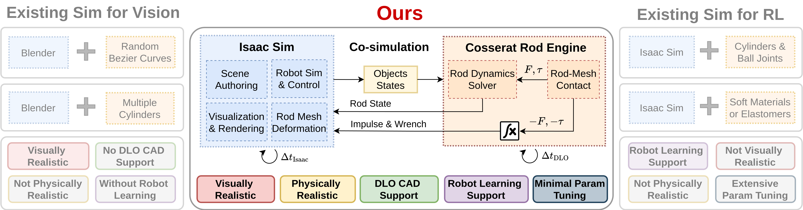
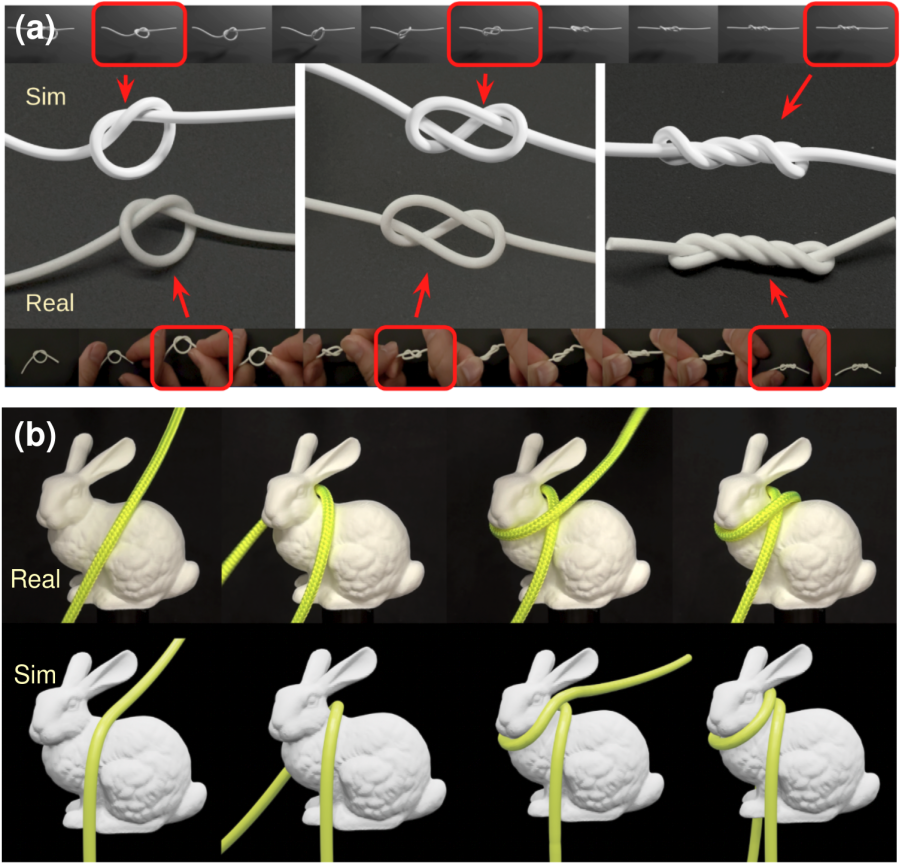
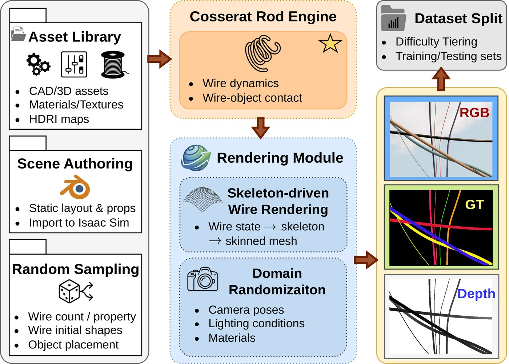
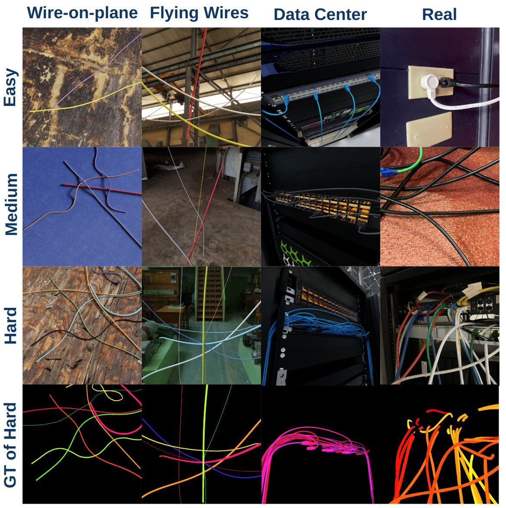
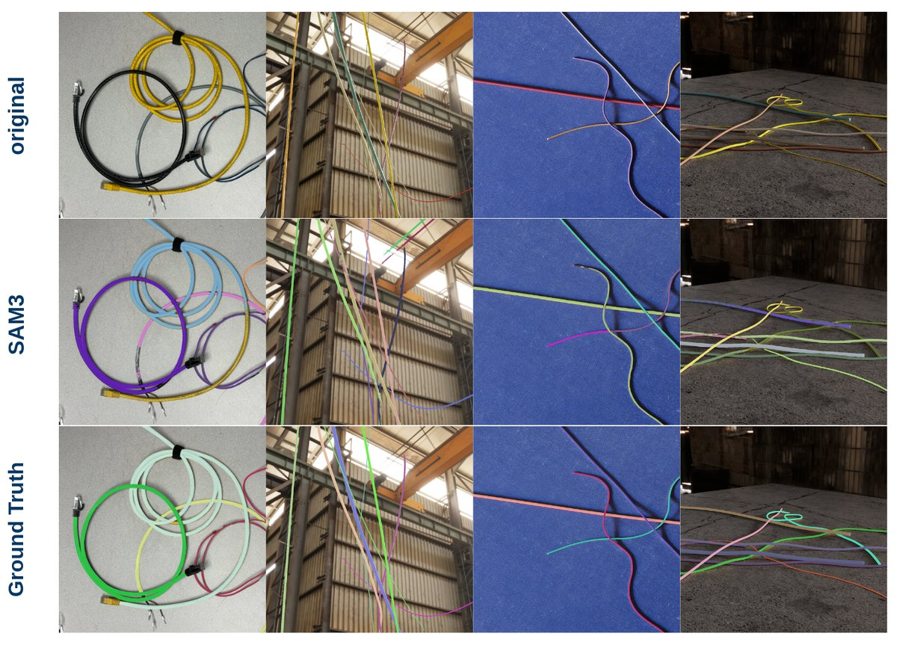
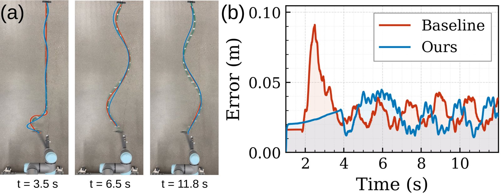
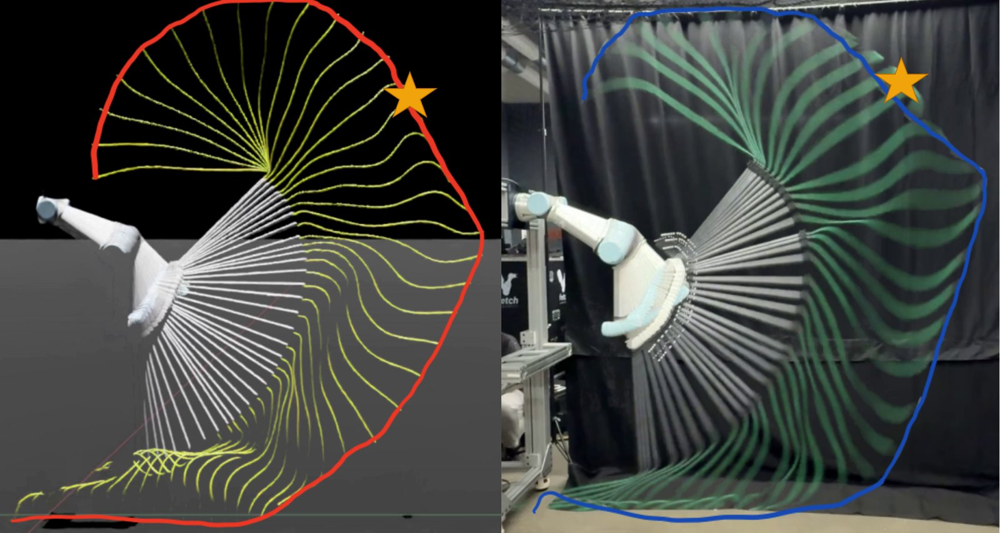

DeformX
A Versatile Co-Simulation Framework
for Deformable Linear Objects
Yi Yang1,3,4,*, Xiang Fei1,*, Lehong Wang1,*, Chenhao Li2, Zilin Dai5, Henry Kou1, Howie Choset1, Lu Li1
1The Robotics Institute, Carnegie Mellon University 2Dept. of Mechanical Engineering, Carnegie Mellon University
3School of Ocean and Civil Engineering, Shanghai Jiao Tong University 4Zhiyuan College, Shanghai Jiao Tong University 5Harvard University
* Equal contribution

Simulating deformable linear objects (DLOs) such as wires, cables, and ropes with both visual realism and physical accuracy remains a significant challenge. We present DeformX, a co-simulation framework integrating a Cosserat rod physics engine with NVIDIA Isaac Sim. DeformX simulates dynamics, self-collisions, and interactions with free-form meshes, while using mesh skinning to map rod deformations to CAD models for high-fidelity visualization. It is the first framework combining realistic visualization, principled physics, and robot learning compatibility.
Key Contributions

Integrates a Cosserat rod physics engine with NVIDIA Isaac Sim via a multi-rate coupling scheme.
 Mesh Skinning
Mesh SkinningMaps discrete Cosserat rod deformations onto CAD models for high-fidelity visualization.

Free-Form Mesh ContactSupports realistic interactions between DLOs and with arbitrary meshes.

WireSeg-32k Dataset32,000 synthetic wire segmentation images with instance masks and depth across Easy/Medium/Hard tiers.
WireSeg-32k Dataset & Segmentation Results

32,000 synthetic images from 300+ simulation runs across Easy/Medium/Hard tiers in wire-on-plane, flying wires, and data center scenarios.

Fine-tuning SAM3 on DeformX-generated data yields 10.2% mAP@75 improvement in real-image wire instance segmentation.
Sim-to-Real Robot Learning

Physics validation: robot-driven rope motion with motion capture comparison.

Goal-conditioned dynamic rope manipulation: simulation vs. real-world on UR5e.
A rope-swinging hit-target policy trained entirely in DeformX achieves 6.6 cm mean target-hitting error when deployed on a real UR5e robot, demonstrating effective sim-to-real transfer.
Paper
Video
Acknowledgements
This work is supported by Biorobotics Lab at Carnegie Mellon University Robotics Institute.
Contact
If you have any questions, please feel free to contact Lehong Wang.